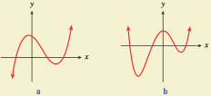
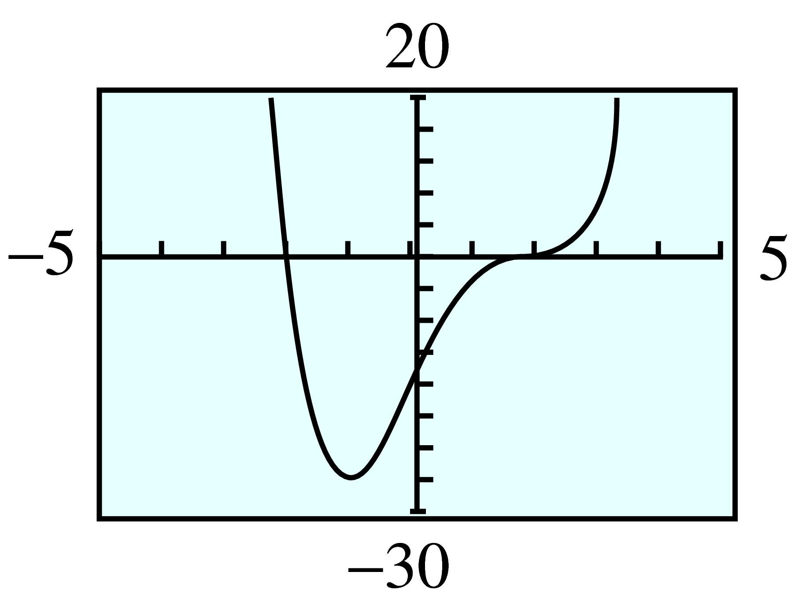

In Section 7.1, we considered applications of polynomial functions. Although most applications use only a portion of the graph of a particular polynomial, we can learn a lot about these functions by taking a more global view of their behavior.
SubsectionClassifying Polynomials by Degree
The graph of a polynomial function depends first of all on its degree. We have already studied the graphs of polynomials of degrees \(0\text{,}\)\(1\text{,}\) and \(2\text{.}\)
A polynomial of degree \(0\) is a constant, and its graph is a horizontal line. An example of such a polynomial function is \(f(x) = 3\text{.}\)
A polynomial of degree \(1\) is a linear function, and its graph is a straight line. The function \(f(x) = 2x - 3\) is an example of a polynomial of degree \(1\text{.}\)
Quadratic functions, such as \(f(x) = -2x^2 + 6x + 8\text{,}\) are polynomials of degree \(2\text{.}\) The graph of every quadratic function is a parabola, with the same basic shape as the standard parabola, \(y = x^2\text{.}\) It has one turning point, where the graph changes from increasing to decreasing or vice versa. The turning point of a parabola is the same as its vertex.
SubsectionCubic Polynomials
Do the graphs of all cubic, or third-degree, polynomials have a basic shape in common? We can graph a few examples and find out. Unlike the basic parabola, the graph of \(y = x^3\) is always increasing. At the origin, however, it changes from concave down to concave up. A point where the graph changes concavity is called an inflection point.
Example7.21.
Graph the cubic polynomial \(P(x) = x^3 - 4x\) and compare its graph with that of the basic cubic, \(y = x^3\text{.}\)
The graph of the basic cubic is shown in figure (a) below. To help us understand the graph of the polynomial \(P(x) = x^3 - 4x\text{,}\) we will evaluate the function to make a table of values. We can do this by hand or use the Table feature on the graphing calculator.
\(x\)
\(-3\)
\(-2\)
\(-1\)
\(0\)
\(1\)
\(2\)
\(3\)
\(P(x)\)
\(-15\)
\(0\)
\(3\)
\(0\)
\(-3\)
\(0\)
\(15\)
The graph of \(P(x) = x^3 - 4x\) is shown in figure (b). It is not exactly the same shape as the basic cubic—it has two turning points—but it is similar, especially at the edges of the graphs.
Despite the differences in the central portions of the two graphs, they exhibit similar long-term behavior.
For very large and very small values of \(x\text{,}\) both graphs look like the power function \(y = x^3\text{.}\)
The \(y\)-values increase from \(-\infty\) toward zero in the third quadrant, and they increase from zero toward \(+\infty\) in the first quadrant. Or we might say that the graphs start at the lower left and extend to the upper right.
All cubic polynomials display this behavior when their lead coefficients (the coefficient of the \(x^3\) term) are positive.
Both of the graphs in Example 7.21 are smooth curves without any breaks or holes. This smoothness is a feature of the graphs of all polynomial functions.
The domain of any polynomial function is the entire set of real numbers.
Checkpoint7.23.Practice 1.
Complete the table of values below for \(C(x) = -x^3 - 2x^2 + 4x + 4\text{.}\)
\(x\)
\(-4\)
\(-3\)
\(-2\)
\(-1\)
\(0\)
\(y\)
\(x\)
\(1\)
\(2\)
\(3\)
\(4\)
\(y\)
Graph \(y = C(x)\) in the standard window. Compare the graph to the graphs in the Example above: What similarities do you notice? What differences?
Both non-basic cubic graphs have three \(x\)-intercepts and two turning points.
True
False
Both non-basic cubic graphs have the same long-term behavior as \(y=x^3\text{.}\)
True
False
The non-basic cubic function from the example has three \(x\)-intercepts and two turning points, but this cubic function has only one turning point.
True
False
The non-basic cubic function from the example has long-term behavior like \(y=x^3\text{,}\) but his cubic function has long-term behavior like \(y=-x^3\text{.}\)
Both graphs have three \(x\)-intercepts, but the function in the Example above has long-term behavior like \(y = x^3\text{,}\) and this function has long-term behavior like \(y = -x^3\text{.}\)
A graph for part (b):
SubsectionQuartic Polynomials
Now let’s compare the long-term behavior of two quartic, or fourth-degree, polynomials.
Example7.24.
Graph the polynomials \(f(x) = x^4 - 10x^2 + 9\) and \(g(x) = x^4 + 2x^3\text{,}\) and compare.
The graphs are shown below. All the essential features of the graphs are shown in these viewing windows. The graphs continue forever in the directions indicated, without any additional twists or turns. You can see that the graph of \(f\) has three turning points, and the graph of \(g\) has one turning point.
As in Example 7.21, both graphs have similar long-term behavior. The \(y\)-values decrease from \(-\infty\) toward zero as \(x\) increases from \(-\infty\text{,}\) and the \(y\)-values increase toward \(+\infty\) as \(x\) increases to \(+\infty\text{.}\) This long-term behavior is similar to that of the power function \(y = x^4\text{.}\) Its graph also starts at the upper left and extends to the upper right.
Checkpoint7.25.Practice 2.
Complete the following table of values for \(Q(x) = -x^4 - x^3 - 6x^2 + 2\text{.}\)
Compare the graph to the graphs in the previous Example: What similarities do you notice? What differences?
The graphs all have four \(x\)-intercepts and three turning points.
True
False
The graphs all have long-term behavior like a fourth degree power function, \(y=ax^4\text{.}\)
True
False
The long-term behavior of the graphs in the example is the same as that of \(y=x^4\text{,}\) but the graph here has long-term behavior like \(y=-x^4\text{.}\)
True
False
The long-term behavior of the graphs in the example is the same as that of \(y=x^4\text{,}\) but the graph here has long-term behavior like \(y=-x^3\text{.}\)
The graphs all have long-term behavior like a fourth degree power function, \(y = ax^4\text{.}\) The long-term behavior of the graphs in the Example is the same as that of \(y = x^4\text{,}\) but the graph here has long-term behavior like \(y = -x^4\text{.}\)
A graph for part (b):
In Examples 7.21 and 7.24, we have seen polynomials of degree 3 and degree 4, whose graphs are illustrated in the next box. In the Homework Problems, you will consider more graphs to help you verify the following observations.
Long-Term Behavior of Polynomial Functions.
A polynomial of odd degree (with positive lead coefficient) has negative \(y\)-values for large negative \(x\) and positive \(y\)-values for large positive \(x\text{.}\)
A polynomial of even degree (with positive lead coefficient) has positive \(y\)-values for both large positive and large negative \(x\text{.}\)

Note7.26.
Another way to describe the long-term behavior of a polynomial graph is to note that for large values of \(\abs{x}\text{,}\) the shape is similar to a power function of the same degree. It is the presence of the lower-degree terms in the polynomial that are responsible for any extra wiggles or turning points in the graph.
Checkpoint7.27.QuickCheck 2.
The long-term behavior of a polynomial of degree \(n\)
In Chapter 6, we saw that the x-intercepts of a quadratic polynomial, \(f(x) = ax^2 + bx + c\text{,}\) occur at values of \(x\) for which \(f(x) = 0\text{,}\) that is, at the real-valued solutions of the equation \(ax^2 + bx + c = 0\text{.}\) The same holds true for polynomials of higher degree.
Solutions of the equation \(P(x) = 0\) are called zeros of the polynomial \(P\text{.}\) In Example 7.21, we graphed the cubic polynomial \(P(x) = x^3 - 4x\text{.}\) Its \(x\)-intercepts are the solutions of the equation \(x^3 - 4x = 0\text{,}\) which we can solve by factoring the polynomial \(P(x)\text{.}\)
The zeros of \(P\) are \(0\text{,}\)\(2\text{,}\) and \(-2\text{.}\) Each zero of \(P\) corresponds to a factor of \(P(x)\text{.}\) This result suggests the following theorem, which holds for any polynomial \(P\text{.}\)
Factor Theorem.
Let \(P(x)\) be a polynomial with real number coefficients. Then \((x - a)\) is a factor of \(P(x)\) if and only if \(P(a) = 0\text{.}\)
Checkpoint7.28.QuickCheck 3.
Without graphing, how can you tell that the polynomial \(p(x)=(x^2+1)(x^2+2)\) has no \(x\)-intercepts?
It cannot be factored further. Because the two quadratic factors are both positive for all \(x\text{,}\) their product is always positive.
The factor theorem follows from the division algorithm for polynomials. (See the Polynomials and Factoring section in Appendix Algebra Skills Refresher to review polynomial division.) We will consider both of these results in more detail in the Homework problems.
Checkpoint7.29.QuickCheck 4.
The graph of which type of polynomial must have an \(x\)-intercept?
The graph of any cubic polynomial must have at least one \(x\)-intercept.
Because a polynomial function of degree \(n\) can have at most \(n\) linear factors of the form \((x - a)\text{,}\) it follows that \(P\) can have at most \(n\) distinct zeros.
Another way of saying this is that if \(P(x)\) is a polynomial of \(n\)th degree, the equation \(P(x) = 0\) can have at most \(n\) distinct solutions, some of which may be complex numbers. (We consider complex numbers in Section 7.3.)
Because only real-valued solutions appear on the graph as \(x\)-intercepts, we have the following corollary to the factor theorem.
\(x\)-Intercepts of Polynomials.
A polynomial of degree \(n\) can have at most \(n\)\(x\)-intercepts.
If some of the zeros of \(P\) are complex numbers, they will not appear on the graph, so a polynomial of degree \(n\)may have fewer than \(n\)\(x\)-intercepts.
Example7.30.
Find the real-valued zeros of each of the following polynomials, and list the \(x\)-intercepts of its graph.
By the factor theorem, the zeros of \(f\) are \(0\text{,}\)\(-3\text{,}\) and \(-3\text{.}\) (We say that \(f\) has a zero of multiplicity two at \(-3\text{.}\)) Because all of these are real numbers, all will appear as \(x\)-intercepts on the graph. Thus, the \(x\)-intercepts occur at \((0, 0)\) and at \((-3, 0)\text{.}\)
Because \(x^2 + 1\) cannot be factored in real numbers, the graph has only two \(x\)-intercepts, at \((-2, 0)\) and \((2, 0)\text{.}\) The graphs of both polynomials are shown below.
Checkpoint7.31.Practice 3.
Find the real-valued zeros of \(P(x) = -x^4 + x^3 + 2x^2\) by factoring.
How may the graph of a polynomial differ from the graph of a power function of the same degree?
SubsectionZeros of Multiplicity Two or Three
The appearance of the graph near an \(x\)-intercept is determined by the multiplicity of the zero there.
Both real zeros of the polynomial \(g(x) = x^4 - 3x^2 - 4\) in Example 7.30b are of multiplicity one, and the graph crosses the \(x\)-axis at each intercept.
The polynomial \(f(x) = x^3 + 6x^2 + 9x\) in Example 7.30a has a zero of multiplicity two at \(x = -3\text{.}\) The graph of \(f\) just touches the \(x\)-axis and then reverses direction without crossing the axis.
To understand what happens in general, compare the graphs of the three polynomials below.
In figure (a), \(L(x) = x - 2\) has a zero of multiplicity one at \(x = 2\text{,}\) and its graph crosses the \(x\)-axis there.
In figure (b), \(Q(x) = (x - 2)^2\) has a zero of multiplicity two at \(x = 2\text{,}\) and its graph touches the \(x\)-axis there but changes direction without crossing.
In figure (c), \(C(x) = (x - 2)^3\) has a zero of multiplicity three at \(x = 2\text{.}\) In this case, the graph makes an S-shaped curve at the intercept, like the graph of \(y = x^3\text{.}\)
Near its \(x\)-intercepts, the graph of a polynomial takes one of the characteristic shapes illustrated above.
Note7.33.
Although we will not consider zeros of multiplicity greater than three, they correspond to similar behavior in the graph:
At a zero of odd multiplicity, the graph has an inflection point at the intercept; its graph makes an S-shaped curve.
At a zero of even multiplicity, the graph has a turning point; it changes direction without crossing the \(x\)-axis.
\(f\) has a zero of multiplicity three at \(x = -2\text{,}\) a zero of multiplicity one at \(x = 1\text{,}\) and a zero of multiplicity two at \(x = 3\text{.}\) The graph has an S-shaped curve at \(x = -2\text{,}\) crosses the \(x\)-axis at \(x = 1\text{,}\) touches the \(x\)-axis at \(x = 3\text{,}\) and then changes direction, as shown below.
Checkpoint7.35.Practice 4.
Sketch a rough graph of \(f(x) = (x + 3)(x - 1)^2\) by hand. Label the \(x\)- and \(y\)-intercepts.
\(f\) has degree three with a positive coefficient of \(x^3\text{,}\) so its graph starts at the lower left and extends to the upper right. The graph crosses the \(x\)-axis at \(x=-3\text{,}\) touches the \(x\)-axis at the double zero \(x=1\) and then changes direction, as shown in the graph below.
Checkpoint7.36.Pause and Reflect.
Explain how the multiplicity of a zero affects the shape of the graph near that zero.
SubsectionSection Summary
SubsubsectionVocabulary
Look up the definitions of new terms in the Glossary.
Degree
Multiplicity
Inflection point
Quartic
Turning point
Cubic
Corollary
Zero
SubsubsectionCONCEPTS
The graphs of all polynomials are smooth curves without breaks or holes.
The graph of a polynomial of degree \(n\) (with positive leading coefficient) has the same long-term behavior as the power function of the same degree.
Factor Theorem.
Let \(P(x)\) be a polynomial with real number coefficients. Then \((x - a)\) is a factor of \(P(x)\) if and only if \(P(a) = 0\text{.}\)
A polynomial of degree \(n\) can have at most \(n\)\(x\)-intercepts.
At a zero of multiplicity two, the graph of a polynomial has a turning point. At a zero of multiplicity three, the graph of a polynomial has an inflection point.
SubsubsectionSTUDY QUESTIONS
Describe the graphs of polynomials of degrees \(0\text{,}\)\(1\text{,}\) and \(2\text{.}\)
What does the degree of a polynomial tell you about its long-term behavior?
What is a zero of a polynomial?
How are zeros related to the factors of a polynomial?
What do the zeros tell you about the graph of a polynomial?
Explain the difference between a turning point and an inflection point.
SubsubsectionSKILLS
Practice each skill in the Homework problems listed.
Identify \(x\)-intercepts, turning points, and inflection points: #1–8, 11–18
Use a graph to factor a polynomial: #21–28
Sketch the graph of a polynomial: #29–46
Find a possible formula for a polynomial whose graph is shown: #47–52
Graph translations of polynomials: #53–56
ExercisesHomework 7.2
Exercise Group.
In Problems 1–8, use your calculator to graph each cubic polynomial.
Describe the long-term behavior of each graph. How does this behavior compare to that of the basic cubic? How does the sign of the lead coefficient affect the graph?
How many \(x\)-intercepts does each graph have? How many turning points? How many inflection points?
1.
\(y = x^3 + 4\)
2.
\(y = x^3 - 8\)
3.
\(y = -2 - 0.05x^3\)
4.
\(y = 5 - 0.02x^3\)
5.
\(y = x^3 - 3x\)
6.
\(y = 9x - x^3\)
7.
\(y = x^3 + 5x^2 - 4x - 20\)
8.
\(y = -x^3 - 2x^2 + 5x + 6\)
Exercise Group.
For Problems 9–10, use a graphing utility to graph each cubic polynomial. Which graphs are the same?
9.
\(\displaystyle y=x^3-2 \)
\(\displaystyle y=(x-2)^3 \)
\(\displaystyle y= x^3-6x^2+12x-8 \)
10.
\(\displaystyle y = x^3 + 3\)
\(\displaystyle y = (x + 3)^3\)
\(\displaystyle y = x^3 + 9x^2+27x+27\)
Exercise Group.
In Problems 11–18, use your calculator to graph each quartic polynomial.
Describe the long-term behavior of each graph. How does this behavior compare to that of the basic quartic? How does the sign of the lead coefficient affect the graph?
How many \(x\)-intercepts does each graph have? How many turning points? How many inflection points?
11.
\(y = 0.5x^4 - 4\)
12.
\(y = 0.3x^4 + 1\)
13.
\(y = -x^4 + 6x^2 - 10\)
14.
\(y = x^4 - 8x^2 - 8\)
15.
\(y = x^4 - 3x^3\)
16.
\(y = -x^4 - 4x^3\)
17.
\(y = -x^4 - x^3 - 2\)
18.
\(y = x^4 + 2x^3 + 4x^2 + 10\)
19.
From your answers to Problems 1–8, what you can conclude about the graphs of cubic polynomials? Consider the long-term behavior, \(x\)-intercepts, turning points, and inflection points.
20.
From your answers to Problems 11–18, what you can conclude about the graphs of quartic polynomials? Consider the long-term behavior, \(x\)-intercepts, turning points, and inflection points.
Exercise Group.
For Problems 21–28,
Use your calculator to graph each polynomial and locate the \(x\)-intercepts. Set \(\text{Xmin} =-4.7\text{,}\)\(\text{Xmax} = 4.7\text{,}\) and adjust \(\text{Ymin}\) and \(\text{Ymax}\) to get a good graph.
Write the polynomial in factored form.
Expand the factored form of the polynomial (that is, multiply the factors together). Do you get the original polynomial?
21.
\(P(x) = x^3 - 7x - 6\)
22.
\(Q(x) = x^3 + 3x^2 - x - 3\)
23.
\(R(x) = x^4 - x^3 - 4x^2 + 4x\)
24.
\(S(x) = x^4 + 3x^3 - x^2 - 3x\)
25.
\(p(x) = x^3 - 3x^2 - 6x + 8\)
26.
\(q(x) = x^3 + 6x^2 - x - 30\)
27.
\(r (x) = x^4 - x^3 - 10x^2 + 4x + 24\)
28.
\(s(x) = x^4 - x^3 - 12x^2 - 4x + 16\)
Exercise Group.
For Problems 29–36, sketch a rough graph of each polynomial function by hand, paying attention to the shape of the graph near each \(x\)-intercept. Check by graphing with a calculator.
29.
\(q(x) = (x + 4)(x + 1)(x - 1)\)
30.
\(p(x) = x(x + 2)(x + 4)\)
31.
\(G(x) = (x - 2)^2(x + 2)^2\)
32.
\(F(x) = (x - 1)^2 (x - 3)^2\)
33.
\(h(x) = x^3(x + 2)(x - 2)\)
34.
\(H(x) = (x + 1)^3(x - 2)^2\)
35.
\(P(x) = (x + 4)^2(x + 1)^2(x - 1)^2\)
36.
\(Q(x) = x^2(x - 5)(x - 1)^2(x + 2)\)
Exercise Group.
For Problems 37–46,
Find the zeros of each polynomial by factoring.
Sketch a rough graph by hand.
37.
\(P(x) = x^4 + 4x^2\)
38.
\(P(x) = x^3 + 3x\)
39.
\(f (x) = x^4 + 4x^3 + 4x^2\)
40.
\(g(x) = x^4 + 4x^3 + 3x^2\)
41.
\(g(x) = 4x - x^3\)
42.
\(f(x) = 8 x -x^4\)
43.
\(K(x) = x^4 - 10x^2 + 16\)
44.
\(m(x) = x^4 - 15x^2 + 36\)
45.
\(r (x) = (x^2 - 1)(x + 3)^2\)
46.
\(s(x) = (x^2 - 9)(x - 1)^2\)
Exercise Group.
For Problems 47–52, find a possible equation for the polynomial whose graph is shown.
47.
48.
49.
50.
51.

52.
Exercise Group.
For Problems 53–56, write the formula for each function in parts (a) through (d) and graph with a calculator. Describe how the graph differs from the graph of \(y = f(x)\text{.}\)
53.
\(f (x) = x^3 - 4x\)
\(\displaystyle y=f(x)+3 \)
\(\displaystyle y=f(x)-5 \)
\(\displaystyle y=f(x-2) \)
\(\displaystyle y=f(x+3) \)
54.
\(f (x) = x^3 -x^2 +x -1\)
\(\displaystyle y=f(x)+4 \)
\(\displaystyle y=f(x)-4 \)
\(\displaystyle y=f(x-3) \)
\(\displaystyle y=f(x+5) \)
55.
\(f (x) = x^4 - 4x^2\)
\(\displaystyle y=f(x)+6 \)
\(\displaystyle y=f(x)-2 \)
\(\displaystyle y=f(x-1) \)
\(\displaystyle y=f(x+2) \)
56.
\(f (x) = x^4 + 3x^3\)
\(\displaystyle y=f(x)+5 \)
\(\displaystyle y=f(x)-3 \)
\(\displaystyle y=f(x-2) \)
\(\displaystyle y=f(x+1) \)
Exercise Group.
Division Algorithm for Polynomials.
If \(f(x) \) and \(g(x)\) are nonconstant polynomials with real coefficients, then there exist unique polynomials \(q(x)\) and \(r (x)\) such that
\begin{equation*}
f (x) = g(x)q(x) + r(x),
\end{equation*}
where \(\text{deg } r(x) \lt \text{deg }g(x)\text{.}\)
In Problems 57–60, use polynomial division to divide \(f(x) \) by \(g(x) \text{,}\) and hence find the quotient, \(q(x) \text{,}\) and remainder, \(r(x) \text{.}\) (See Algebra Skills Refresher Section A.7 to review polynomial division.)
and fill in the table of values below. (You can use the value feature on your calculator.)
\(x\)
\(-1\)
\(-0.5\)
\(0\)
\(0.5\)
\(1\)
\(1.5\)
\(2\)
\(f(x) \)
\(\hphantom{0000} \)
\(\hphantom{0000} \)
\(\hphantom{0000} \)
\(\hphantom{0000} \)
\(\hphantom{0000} \)
\(\hphantom{0000} \)
\(\hphantom{0000} \)
\(p(x) \)
\(\)
\(\)
\(\)
\(\)
\(\)
\(\)
\(\)
The error in the approximation is the difference \(f (x) - p(x)\text{.}\) We can reduce the error by using a polynomial of higher degree. The \(n\)th degree polynomial for approximating \(e^x\) is
where \(n! = n(n - 1)(n - 2) \cdots 3 \cdot 2 \cdot 1\text{.}\) Graph \(f(x) \) and \(P_5(x)\) in the same window as in part (b). What is the error in approximating \(f (2)\) by \(P_5(2)\text{?}\)
Graph \(f (x) - P_5(x)\) in the same window as in part (b). What does the graph tell you about the error in approximating \(f (x)\) by \(P_5(x)\text{?}\)
\begin{equation*}
f (x) =\sin(x)~~~~ \text{and}~~~~p(x) = x - \frac{1}{6}x^3
\end{equation*}
in the standard window. (Check that your calculator is set in Radian mode.) For what values of \(x\) does it appear that \(p(x)\) would be a good approximation for \(f (x)\text{?}\)
(See Problem 69 for the definition of \(n!\text{.}\)) Graph \(f(x) \) and \(P_5(x)\) in the same window as in part (b). What is the error in approximating \(f (2)\) by \(P_5(2)\text{?}\)
Graph \(f (x) - P_5(x)\) in the same window as in part (b). What does the graph tell you about the error in approximating \(f (x)\) by \(P_5(x)\text{?}\)